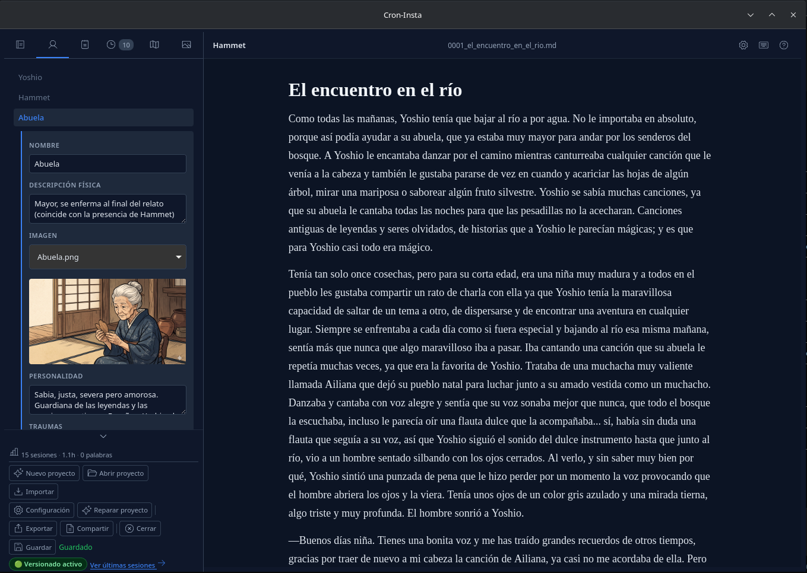
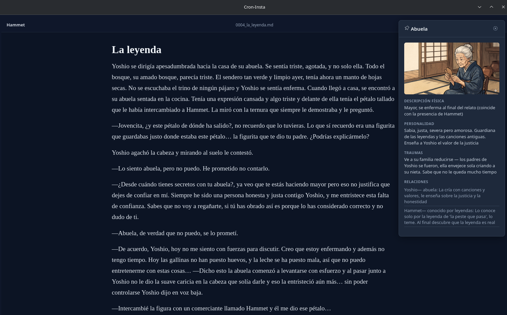
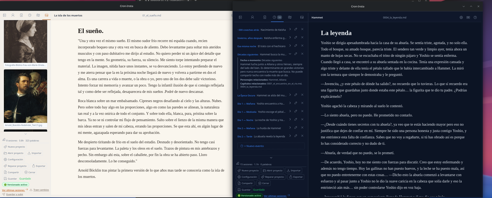

Escritorio literario — una aplicación de escritorio para escritores con control de versiones integrado
Presentación técnica · Julio 2026
Un editor literario de escritorio que integra procesador de texto, worldbuilding y control de versiones en una sola herramienta. No es un procesador genérico: está diseñado específicamente para el flujo de trabajo de un novelista.
Local-first. Todo ocurre en el disco local. Los datos son tuyos, en formato abierto. Sin nube, sin cuenta, sin dependencia externa.
Las herramientas existentes obligan a elegir: o escribes en un editor sin estructura, o gestionas worldbuilding en apps separadas, o versionas manualmente con Git. Cron-Insta unifica los tres planos en una experiencia coherente.

TipTap (ProseMirror) como núcleo de edición. Tipografía Georgia a 18px con 80 caractéres por línea. Modo oscuro pensado para sesiones largas. Autoguardado configurable (1/5/10 min).
Fichas de personajes (con relaciones), lugares (con imagen), notas de investigación, timeline cronológico y sistema de tramas con drag & drop. Todo indexado y buscable desde el sidebar.
Subida de imágenes de referencia, visor modal con zoom, anclado al editor (dock panel). Fallback case-insensitive cross-platform para compatibilidad Windows/macOS/Linux.
Tracking silencioso de palabras escritas y tiempo por capítulo. Panel de estadísticas con histórico de sesiones, totales por proyecto y bootstrap desde sesiones anteriores.
Sistema de CSS custom properties con 4 temas completos: Nordic Oscuro, Amatista, Nordic Claro y Sepia. Migración automática desde el antiguo sistema binario dark/light.
31 acciones con atajos personalizables desde el panel de configuración. Detección de conflictos con swap/overwrite. 5 grupos en acordeones. Compatible con teclados españoles.


Cada proyecto es un repositorio Git autónomo. El versionado es totalmente opcional: sin Git instalado, la app funciona igual. Si Git está presente, se integra de forma transparente.
git init al crear proyecto (si Git disponible)proyecto/ ├── .git/ ← repositorio autónomo ├── .config/ │ ├── metadata.json ← índice del proyecto │ ├── timeline.json ← eventos cronológicos │ └── stats.json ← estadísticas de sesión ├── capitulos/ ← un .md por capítulo ├── personajes/ ← un .json por personaje ├── lugares/ ← un .json por lugar ├── notas/ ← notas de investigación └── media/ ← imágenes de referencia
Todo en texto plano. Markdown para capítulos, JSON para metadatos. Sin base de datos, sin formato propietario. Tus datos sobreviven a la aplicación.
En v0.3.0 el backend era un solo archivo de 7370 líneas
(lib.rs). Se aplicó un refactor guiado por principios SOLID
para extraer 16 módulos con responsabilidad única.
Cada archivo en commands/ maneja exactamente un
dominio: chapters.rs no sabe de personajes,
media.rs no toca el timeline. Models, utils y
commands son capas separadas.
Añadir un nuevo comando Tauri es añadir un archivo a
commands/ y una línea en mod.rs.
El invoke_handler crece por registro, no por
modificación de lógica existente.
Models usa #[serde(default)] para
backward compatibility. Un metadata.json de v0.2.0
se deserializa correctamente en v0.3.5 sin migración.
Los comandos Tauri exponen interfaces mínimas. El frontend
recibe exactamente los datos que necesita. GitDetectedConfig
es un struct de solo lectura; VisibleTabs valida
invariantes en frontera.
utils.rs concentra funciones puras sin dependencia
de AppHandle. Los comandos dependen de utilidades,
no al revés. system_command() abstrae diferencias
Windows/Linux (CREATE_NO_WINDOW, SSH_AUTH_SOCK).
Resultado: 1 archivo monolítico → 16 módulos
enfocados. El test suite (137 tests) vive en lib.rs
y tiene acceso a todos los comandos vía crate::commands::*.
src-tauri/src/ ├── commands/ │ ├── mod.rs ← re-exports │ ├── project.rs ← crear, abrir, activar │ ├── chapters.rs ← CRUD capítulos │ ├── characters.rs ← CRUD personajes │ ├── places.rs ← CRUD lugares │ ├── notes.rs ← CRUD notas │ ├── timeline.rs ← eventos cronológicos │ ├── tramas.rs ← plotlines + drag & drop │ ├── media.rs ← upload, base64, fallback │ ├── git.rs ← init, push, log, remote │ ├── config.rs ← identidad, fuente, tabs │ ├── stats.rs ← sesiones, checkpoint │ ├── export.rs ← ZIP, import/export │ ├── repair.rs ← reconstruir índices │ └── shortcuts.rs ← atajos configurables ├── models.rs ← structs, enums, Default ├── utils.rs ← funciones puras ├── lib.rs ← entry point + tests └── main.rs ← binario
src/lib/ ├── components/ │ ├── Editor.svelte ← TipTap wrapper │ ├── DockPanel.svelte ← personaje/nota/lugar/media │ ├── StatsFooter.svelte ← barra de estadísticas │ ├── GlobalSettingsDialog.svelte ← idioma + tema │ ├── GitIdentityDialog.svelte ← identidad Git │ ├── ProjectSettingsDialog.svelte ← fuente, tabs, remote │ └── EditorContextMenu.svelte ← menú contextual ├── i18n.svelte.ts ← 110+ claves ES/EN reactivas ├── theme.svelte.ts ← ThemeManager con $state ├── checkpoint.ts ← debounce + auto-push ├── debounce.ts ← utilidad genérica └── tauri.ts ← wrappers de IPC
+page.svelte sigue siendo el archivo más grande (~5700 líneas). Es el siguiente candidato a descomposición en componentes de layout (sidebar, toolbar, panel de capítulos).
Tauri v2 como runtime de escritorio. 15 módulos
de comandos con #[tauri::command]. Estado compartido
vía Mutex<ProjectState>. Sin unsafe, sin GC.
Dependencias: serde, chrono, base64, zip, tokio (timers)
Runes mode ($state, $effect,
$derived). Reactividad sin Virtual DOM.
i18n reactivo con $state. ThemeManager con
data-theme en <html>.
TipTap (ProseMirror) como editor rich text
Vite con manualChunks para
tiptap/prosemirror (217 kB el chunk principal).
GitHub Actions: build matrices para
Windows, macOS y Linux. Release automática al pushear tag.
Sin gh CLI. El CI gestiona releases.
Scaffold. Bootstrap con pnpm create tauri-app.
5 comandos Rust en un solo archivo. Sin frontend real, solo estructura.
Diseño del sistema refinado de v1.0.0 a v1.1.0 con schemas de datos y
estrategia de testing.
Editor funcional. Integración de TipTap con debounce save. Sidebar con capítulos, personajes y notas. i18n ES/EN con 110+ claves. Persistencia de ventana. Auto-reopen del último proyecto. Identidad Git configurable con 3-strike push.
Configuración. Phosphor Icons reemplazan emojis. Fuente configurable por proyecto. Tema claro pastel. Auto-detección de git config del sistema.
La sesión masiva — 40+ commits
4 temas visuales con CSS variables. Sistema de tramas con drag & drop. Galería multimedia. Estadísticas de sesión. Dock unificado. Pestañas opcionales. Autoguardado configurable. Settings global. Refactor SOLID: backend de 1→16 módulos, +2 componentes frontend.
Atajos configurables (31 acciones). Detección de conflictos. Acordeones. Sistema de reparación de proyectos. Chunk splitting de Vite (610→217 kB). Fix de teclado español.
Imagen en personajes y lugares. Fallback case-insensitive cross-platform. Toggle de pestaña Media. Galería responsive. Limpieza de caché entre proyectos.
Fix de fuga de estado entre proyectos (SessionTracker + 12 variables $state). Panel de stats funcional.
Atajos cross-platform seguros: mod-dynamic (Cmd/Ctrl según SO), acceso directo a pestañas (Ctrl+Shift+1..6). Formateo bold/italic con menú contextual y panel de atajos. Auditoría 31 atajos documentada en SHORTCUTS.md.
Gestión completa de media: eliminación de imágenes desde el visor con limpieza automática de referencias en personajes y lugares. Schema.md actualizado con campos image, visible_tabs y auto_save_interval_minutes. Estado actual.
SDD (Spec-Driven Development) en cada feature no trivial:
Dual dock panels
Anclar dos fichas simultáneamente (izquierda + derecha del editor)
con Ctrl+Shift+Enter. Layout: sidebar | left-dock | editor | right-dock.
Gestión de imágenes
Redimensionar y optimizar imágenes desde la app. Límites de tamaño, conversión de formato. Pensado para la galería multimedia.
Auto-detect git config
Leer git config user.name / user.email del
sistema al crear proyecto. SDD planificado, pendiente de implementar.
Descomposición de +page.svelte
El archivo principal tiene ~5700 líneas. Extraer sidebar, toolbar, panel de capítulos y formularios a componentes independientes.
Una herramienta que entiende cómo trabajan los escritores
github.com/galejan/cron-insta
Tauri v2 · Svelte 5 · Rust · TipTap · 4 temas · Git integrado · Local-first